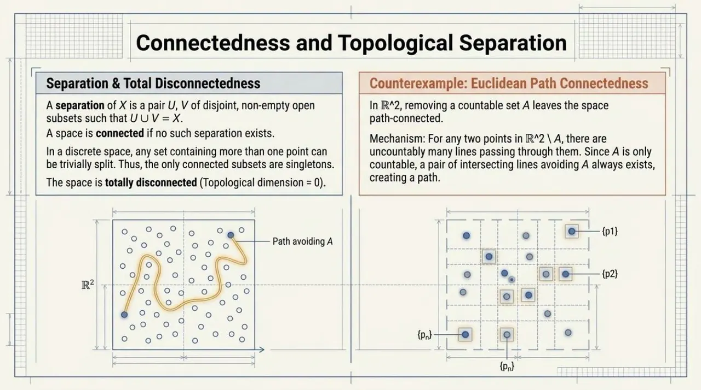

기둥 1 · 공간을 나누는 법 · 03장
연결과 끊김 — 한 덩어리인가, 둘로 갈라지나
자르는 선 하나로 공간의 「덩어리 수」를 판정하기
자르는 선 하나로 공간의 「덩어리 수」를 판정하기
핵심 질문 — 어떤 공간이 「한 덩어리」라는 것을, 자 없이 열린 집합만으로 어떻게 말할까?
일상에서 「연결됐다」는 손을 떼지 않고 그릴 수 있다는 뜻이에요. 위상수학은 이것을 반대로 정의해요. 공간을 비어 있지 않은 열린 두 덩어리로 가를 수 없으면 연결입니다. 이 정의로 이산 공간이 왜 「완전히 끊긴」 공간인지, 평면에서 구멍을 무수히 뚫어도 왜 길이 남는지 확인해요.
숫자 요약은 이 장의 예시 계산에서 나온 값입니다(실제 데이터가 아닌 설명용 값).
오늘은 조별 과제예요. 과제는 모두 「자르기」입니다. 가위 대신 열린 집합으로요.
종이 자르기 같은 거면 자신 있어!
행렬·벡터, 복잡한 공식을 몰라도 됩니다. 그림을 움직여 보고, 밑줄 친 말을 누르면 뜻이 나옵니다.
이 페이지 사용법: 밑줄 친 말을 누르면 뜻이 나옵니다(Esc로 닫기). 단계마다 그림을 직접 움직여 보고, 끝의 확인 퀴즈로 점검하세요. 앞 장: 02 이산 위상과 밀착 위상 — 모두 혼자 vs 모두 한 덩어리
1조(도넛조)와 2조(머그조)가 같은 과제 세 개를 받아요. 「이 집합을 열린 두 덩어리로 가를 수 있는가?」 조마다 그림으로 답을 찾고, 조교가 채점합니다.
1조는 시아가 기록, 제가 그림, X1이 발표예요!
…2조는 제가 그림 그릴게.
사진 속 물체 세기, 지도 위 섬 세기 모두 「연결 성분(덩어리)」 세기예요.
「점마다 혼자」라는 느낌을 「완전히 끊김(연결된 덩어리가 점 하나뿐)」이라는 정확한 말로 바꿔요.
「구멍이 무한히 많으면 막힐 것 같은데?」 같은 직관을 계산으로 확인하는 연습이에요.
「분리」의 정의에는 「비어 있지 않은」과 「열린」 두 조건이 함께 있어요. 둘 중 하나라도 빼면 정의가 무너지니, 그림 실험에서 둘 다 확인해 보세요.
상황 질문 — 섬 두 개가 있는 지도에 선을 하나 그어 「왼쪽 섬 / 오른쪽 섬」으로 나누려면, 선을 어디에 그어야 할까요?
U ∪ V = X, U ∩ V = ∅ … 기호가 연달아 나오니까 숨이 차요.
학교 수학으로 보면: 중학교 집합의 「합집합 = 전체」, 「교집합 = 공집합」이에요. 둘로 빈틈없이, 겹침 없이 나눈다는 말을 기호로 쓴 거예요.
| 식 조각 | 읽는 법 | 뜻 |
|---|---|---|
| U ∪ V = X | 유 합집합 브이는 엑스 | 두 덩어리를 합치면 전체 (빠진 곳 없음) |
| U ∩ V = ∅ | 유 교집합 브이는 공집합 | 두 덩어리가 겹치지 않음 |
| U ≠ ∅, V ≠ ∅ | 둘 다 공집합이 아님 | 둘 다 비어 있지 않음 |
X = [0,1] ∪ [2,3], 자르는 자리 c = 1.5
U = X 중 1.5보다 작은 부분 = [0,1], V = [2,3]
U, V는 X 안에서 열려 있고(X의 다른 부분과 떨어져 있음), 겹치지 않고, 합치면 X → 분리 성공
X = [0,3], c = 1.5면 1.5 자체가 어느 쪽에 들어가도 그쪽이 X 안에서 열려 있지 않음 → 실패
자르는 선이 땅 위를 지나면 실패, 바다를 지나면 성공. 결국 그 얘기네요!
두 섬 사이 바다에 줄을 그으면 섬을 깔끔하게 나눌 수 있어요. 한 섬의 한가운데를 가르면 줄 위의 땅은 어느 쪽에도 깔끔하게 속하지 않아요.
X를 비어 있지 않고 서로 겹치지 않는 열린 두 집합 U, V로 나누는 것을 분리라 하고, 분리가 없으면 X는 연결이에요. 수직선의 구간 [0,3]은 연결이고, [0,1] ∪ [2,3]은 아니에요.
[0,3] 한 덩어리를 골라서 어디든 잘라 보세요. 성공하는 자리가 있나요?
1.5에서 자르면 반반이니까 당연히 성공이죠!
1.5라는 점 자체는 어디로 가? 그 점 둘레를 생각해 봐.
원자료 「Connectedness and Topological Separation」 왼쪽 위 상자: 분리와 연결의 정의.

상황 질문 — 개울에 띄엄띄엄 놓인 돌 위에서, 다른 돌로 발을 떼지 않고 건너갈 수 있을까요?
징검다리 없이 띄엄띄엄 놓인 돌들은 어느 두 돌 사이에도 물이 흘러요. 함께 이어진 무리는 돌 한 개씩뿐이에요.
이산 공간에서는 {x}와 그 바깥이 모두 열려 있어서, 점이 2개 이상인 집합은 언제나 분리돼요. 연결 성분이 모두 한 점 → 완전히 끊김, 위상 차원 0.
「떨어진 점 6개」를 고르고 점 사이 아무 데나 잘라 보세요.
어디를 잘라도 성공이에요! 다 따로따로네요.
그럼 「점 사이」가 아니라 점 위를 자르면? 이산 공간에서는 그 점 하나만 따로 떼어 내도 돼.
원자료 왼쪽 상자 하단: 이산 공간에서는 연결된 부분집합이 한 점짜리뿐 → 완전히 끊김(위상 차원 0).
상황 질문 — 운동장에 물웅덩이가 아주 많아도, 신발을 적시지 않고 교문까지 갈 수 있을까요?
「셀 수 있는 무한」이랑 「셀 수 없는 무한」이 다르다고요? 무한은 다 같은 무한 아니에요?
학교 수학으로 보면: 고등학교 이후에 나오는 내용이라 처음 들어도 괜찮아요. 중학교 「유리수는 분수로 나타낼 수 있다」에서 분수들에 번호를 붙여 줄 세울 수 있다는 것이 출발점이에요.
| 식 조각 | 읽는 법 | 뜻 |
|---|---|---|
| ℝ² \ A | 알 투 빼기 에이 | 평면에서 구멍 모음 A를 뺀 나머지 |
| A가 셀 수 있음 | 구멍들에 1번, 2번, 3번 … 번호를 붙일 수 있음 | |
| P → B → Q | 점 P에서 꺾는 점 B를 거쳐 Q로 가는 꺾은선 |
P와 Q의 수직이등분선 위에 꺾는 점 B를 둔다(중학교 작도!)
B의 후보는 그 직선 위의 모든 점 → 셀 수 없이 많음
구멍 하나가 막는 B는 기껏해야 몇 개뿐 → 구멍 1,000개가 막는 B도 유한 개
그러니 막히지 않는 B가 남는다 → 길이 있음
구멍 하나당 막히는 길이 몇 개뿐인데 길 후보는 끝없이 많으니까, 반드시 빈 길이 남는구나!
웅덩이가 아무리 많아도 웅덩이 하나하나가 「점」처럼 작다면, 꺾어 걷는 길을 조금씩 바꿔 가며 마른 길을 찾을 수 있어요.
평면 ℝ²에서 셀 수 있는 점 집합 A를 빼도 ℝ² \ A는 길 연결이에요. 수직선에서는 점 하나만 빼도 끊기는 것과 대조적이에요.
노란 꺾는 점을 끌어서, 구멍을 하나도 안 밟는 길을 찾아보세요.
구멍 150개면 운에 맡겨야죠. 길이 있을 확률은 낮아요!
「자동으로 빈 길 찾기」를 눌러 봐. 확률이 아니라 확실히 있어.
원자료 오른쪽 상자 「Counterexample: Euclidean Path Connectedness」: 평면에서 셀 수 있는 집합을 빼도 길 연결.
X3가 AI에게 「평면에서 정수 좌표 점 (m, n)을 모두 빼면 끊어지나요?」라고 물었어요.
「무한히 많다」, 「고르게 퍼져 있다」 같은 말이 나오면, 반례가 될 만한 구체적인 길 하나(y = 0.5)를 직접 그려 보세요. 한 개의 반례가 긴 설명보다 강해요.
평면에 구멍 1,000개를 뿌리고, 두 점 P와 Q를 꺾은선 하나로 이을 수 있는지를 두고 조교들이 맞붙었어요.
「안 막혀. 꺾는 자리 후보가 훨씬 많거든.」
「1,000개면 빽빽해요. 길은 막힐 거예요!」
누가 맞을지 먼저 예상해 보고 단추를 누르세요. 판정은 계산 결과로만 합니다.
개념정리 흐름: 연결과 분리 → 완전히 끊긴 공간 → 구멍 뚫린 평면의 길 연결
| 개념 | 한 줄 뜻 | 일상 비유 | 비유의 한계 |
|---|---|---|---|
| 분리 | 비어 있지 않은 열린 두 덩어리로 나누기 | 두 섬 사이 바다에 줄 긋기 | 수학의 분리는 거리와 무관 — 바다가 아무리 좁아도 됨 |
| 연결 | 분리가 불가능 | 한 섬 | 「손 떼지 않고 그리기(길 연결)」와 대부분 같지만 완전히 같지는 않아요 |
| 완전히 끊긴 공간 | 연결 성분이 모두 한 점 | 띄엄띄엄 징검돌 | 점이 다닥다닥 붙어 있어도 끊길 수 있어요(14장 캔터 집합) |
| 길 연결 | 두 점을 곡선으로 이을 수 있음 | 웅덩이 피해 걷기 | 수학의 구멍은 크기 0 — 실제 웅덩이보다 피하기 쉬움 |
조별 과제 채점 결과: 두 조 모두 만점! 바다에만 줄을 그으면 된다는 걸 잘 찾았어요.
발표 내가 했어!
…자동으로 빈 길 찾기, 그 단추 좋았다.
1,000개나 뿌렸는데…. 다음 계산배틀에선 꼭 이길 거예요.
다음 장 예고: 04장 계산배틀에서는 「유한 개의 우산으로 다 덮을 수 있나」를 두고 숫자로 맞붙어요. 콤팩트라는 성질이에요.